전기산업기사 (2007-03-04 기출문제)
1과목: 전기자기학
1. 도체계에서 전위계수의 성질로 옳지 않은 것은?
- Prr ≧ Prs
- Prr ＜ 0
- Prs ≧ 0
- Prs = Psr
(정답률: 64%)

2. 강자성체의 자속밀도 B의 크기와 자화의 세기 J의 크기를 비교할 때 옳은 것은?
- J 는 B보다 약간 크다.
- J 는 B보다 약간 작다.
- J 는 B보다 대단히 크다.
- J 는 B보다 대단히 작다.
(정답률: 76%)
3. 그림과 같은 정전용량이 C0[F]되는 평행판 공기콘덴서의 판면적의 2/3 되는 공간에 비유전율 εs인 유전체를 채우면 공기콘덴서의 정전용량은 몇 F 인가??
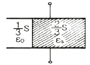
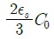
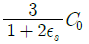
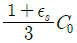
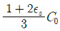
(정답률: 82%)
4. 어느 점전하에 의하여 생기는 전위를 처음 전위의 1/2 이 되게 하려면 전하로부터의 거리를 몇 배로 하면 되는가?
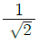
- 1/2
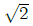
- 2
(정답률: 68%)
5. 10A 가 흐르는 1m 간격의 평행 도체 사이의 1m 당 작용하는 힘 [N/m]은?
- 1
- 10-5
- 2×10-5
- 2×10-7
(정답률: 63%)
6. 반지름 a[m]되는 접지 도구체의 중심에서 r[m]되는 거리에 점전하 Q[C]을 놓았을 때 도체구에 유도된 총 전하는 몇 C 인가?
- 0
- -Q
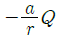
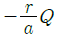
(정답률: 65%)
7. 도체의 고유저항과 관계없는 것은?
- 온도
- 길이
- 단면적
- 단면적의 모양
(정답률: 74%)
8. 자극의 세기 4×10-6㏝, 길이 20cm 인 막대자석을 150A/m의 평등 자계내에 자계와 60°로 놓았을 때 자석이 받는 회전력은 몇 N∙m 인가?(오류 신고가 접수된 문제입니다. 반드시 정답과 해설을 확인하시기 바랍니다.)
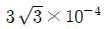
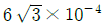
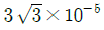
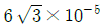
(정답률: 50%)
9. 전기력선의 성질이 아닌 것은?
- 정전하에서 시작하여 부전하에서 끝난다.
- 전기력선은 자신만으로 폐곡선을 만든다.
- 전위가 높은 점에서 낮은 점으로 향한다.
- 도체 내부에는 전기력선이 존재하지 않는다.
(정답률: 80%)
10. 다음 중 정전계의 설명으로 옳은 것은?
- 전계 에너지가 최소로 되는 전하분포의 계이다.
- 전계 에너지가 최대로 되는 전하분포의 계이다.
- 전계 에너지가 항상 0 인 전기장을 말한다.
- 전계 에너지가 항상 ∞ 인 전기장을 말한다.
(정답률: 77%)
11. 안테나에서 파장 20cm 인 평면파가 자유 공간에 전파될때 발신 주파수는 몇 MHz 인가?
- 1500
- 800
- 750
- 100
(정답률: 63%)
12. 전류에 대한 설명 중 옳지 않은 것은?
- 전하의 이동이다.
- 1[V/s]를 1A로 한다.
- 전하가 전계 방향으로 평균속도
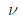
로 이동함에 따라 생기는 전류를 드리프트 전류라 한다. - div i = 0은 전류의 연속성이라 한다.
(정답률: 60%)
13. 유전율이 각각 ε1, ε2인 두 유전체가 접해 있다. 각 유전체 중의 전계 및 전속밀도가 각각 E1, D1 및 E2, D2이고 경계면에 대한 입사각 및 굴절각이 θ1, θ2일 때 경계조건으로 옳은 것은?
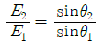
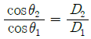
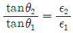
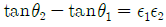
(정답률: 79%)
14. 15°C의 물 4L를 용기에 넣어 1kW 의 전열기로 가열하여 물의 온도를 90°C 로 올리는데 30분이 필요하였다. 이 전열기의 효율은 약 몇 % 인가?
- 50
- 60
- 70
- 80
(정답률: 45%)
15. 다음 중 거리 r에 반비례하는 전계의 세기를 가진 것은?
- 점전하
- 구전하
- 전기쌍극자
- 선전하
(정답률: 74%)
16. 자유 공간에 있어서 변위 전류가 만드는 것은?
- 전계
- 투자율
- 유전율
- 자계
(정답률: 68%)
17. 권수 600회, 평균 직경 20cm, 단면적 10cm2의 환상솔레 노이드 내부의 비투자율 800의 철심이 들어있다. 여기에 1A의 전류를 흘린다면 철심중의 자속은 몇 Wb 인가?
- 9.6×10-2
- 9.6×10-3
- 9.6×10-4
- 9.6×10-5
(정답률: 49%)
18. 벡터 A = 2i - 6j - 3k 와 B = 4i ＋ 3j － k 에 수직한 단위 벡터는?
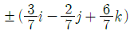
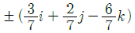
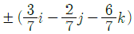
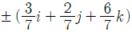
(정답률: 52%)
19. 맥스웰(Maxwell)의 전자방정식 중 성립하지 않는 것은?
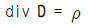
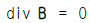
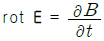
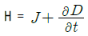
(정답률: 66%)
20. 자장 중에서 도선에 발생되는 유기 기전력의 방향은 어떤 법칙에 의하여 설명되는가?
- 패러데이(Faraday)의 법칙
- 앙페르(Ampere)의 오른나사 법칙
- 렌츠(Lenz)의 법칙
- 가우스(Gauss)의 법칙
(정답률: 65%)
2과목: 전력공학
21. 다음 중 조상설비가 아닌 것은?
- 동기 조상기
- 진상 콘덴서
- 상순 표시기
- 분로 리액터
(정답률: 77%)
22. 조압수조 중 서징의 주기가 가장 빠른 것은?
- 제수공 조압수조
- 수실 조압수조
- 차동 조압수조
- 단동 조압수조
(정답률: 53%)
23. 그림과 같은 열사이클의 명칭은?
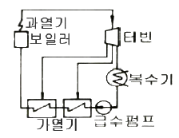
- 랭킨사이클
- 재생사이클
- 재열사이클
- 재생재열사이클
(정답률: 67%)
24. 그림과 같은 3상 발전기가 있다. a 상이 지락한 경우 지락 전류는 어떻게 표현되는가? (단, Z0 : 영상임피던스, Z1 : 정상임피던스, Z3 : 역상임피던스이다.)
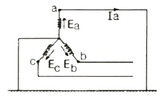
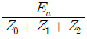
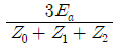
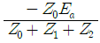
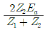
(정답률: 76%)
25. 송전선로에서 단선고장시 이상전압이 가장 큰 접지 방식은?
- 비접지방식
- 직접접지방식
- 소호리액터 접지방식
- 저항접지방식
(정답률: 51%)
26. 원자로의 감속재로 사용하기에 적당하지 않은 것은?
- 중수
- 경수
- 흑연
- 납
(정답률: 67%)
27. 유효낙차 50m에서 출력 7500kW 의 수차가 있다. 유효 낙차가 2.5m 만큼 낮아졌을 때 출력은 약 몇 kW 가 되는가? (단, 수차의 수구개도는 일정하며, 효율의 변화는 무시하기로 한다.)
- 6650
- 6755
- 6850
- 6945
(정답률: 46%)
28. 분산부하의 배전선로에서 선로의 전력손실은?
- 전압강하에 비례한다.
- 전압강하에 반비례한다.
- 전압강하의 제곱에 비례한다.
- 전압강하의 제곱에 반비례한다.
(정답률: 31%)
29. 양수발전의 주된 목적으로 옳은 것은?
- 연간 발전량을 증가시키기 위하여
- 연간 평균 손실 전력을 줄이기 위하여
- 연간 발전비용을 감소시키기 위하여
- 연간 수력발전량을 증가시키기 위하여
(정답률: 63%)
30. 송전선로에서 연가를 하는 주된 목적은?
- 유도뢰의 방지
- 전격뢰의 방지
- 선로의 미관상
- 선로정수의 평형
(정답률: 78%)
31. 다음 중 플리커 예방을 위한 수용가 측의 대책이 아닌것은?
- 공급 전압을 승압한다.
- 전원계통의 리액터분을 보상한다.
- 전압 강하를 보상한다.
- 부하의 무효전력 변동분을 흡수한다.
(정답률: 56%)
32. 총단면적이 같은 경우 단도체와 비교해 볼 때 복도체의 이점으로 옳지 않은 것은?
- 정전용량이 증가한다.
- 안전전류가 증가한다.
- 송전전력이 증가한다.
- 코로나 임계전압이 낮아진다.
(정답률: 62%)
33. 피뢰기의 정격전압이란?
- 상용주파수의 방전개시전압
- 속류를 차단할 수 있는 최고의 교류전압
- 방전을 개시할 때 단자전압의 순시값
- 충격방전전류를 통하고 있을 때 단자전압
(정답률: 54%)
34. 열효율 35%의 화력발전소에서 발열량 6000kcal/kg의 석탄을 이용한다면 1kWh를 발전하는데 필요한 석탄량은 약몇 kg 인가?
- 0.41
- 0.82
- 1.23
- 2.42
(정답률: 41%)
35. 전력계통의 안정도 향상대책으로 옳은 것은?
- 송전계통의 전달 리액턴스를 증가시킨다.
- 재폐로 방식을 사용한다.
- 전원측 원동기용 조속기의 부동시간을 크게 한다.
- 고장을 줄이기 위하여 각 계통을 분리시킨다.
(정답률: 59%)
36. 송전거리 50km, 송전 전력 5000kW 일 때의 경제적인 송전전압은 몇 kV 정도가 적당한가? (단, Still 의 식에 의하여 구한다.)(오류 신고가 접수된 문제입니다. 반드시 정답과 해설을 확인하시기 바랍니다.)
- 29
- 39
- 49
- 59
(정답률: 69%)
37. 수전단을 단락한 경우 송전단에서 본 임피던스는 300Ω이고 수전단을 개방한 경우에는 1200Ω 일 때 이 선로의 특성 임피던스는 몇 Ω 인가?
- 300
- 500
- 600
- 800
(정답률: 65%)
38. 정격용량 20000kVA, 임피던스 8% 인 3상 변압기가 2차측에서 3상 단락되었을 때 단락용량은 몇 MVA 인가?
- 160
- 200
- 250
- 320
(정답률: 66%)
39. 전주 사이의 경간이 50m 인 가공전선로에서 전선 1m 의 중량이 0.37kg, 전선의 이도가 0.8m 이라면 전선의 수평장력은 약 몇 kg 인가?
- 80
- 120
- 145
- 165
(정답률: 56%)
40. 역률 개선을 통해 얻을 수 있는 효과로 옳지 않은 것은?
- 전력 손실의 경감
- 설비 용량의 여유분 증가
- 전압 강하의 경감
- 고조파 제거
(정답률: 68%)
3과목: 전기기기
41. 동기발전기의 전기자 권선을 단절권으로 하면 어떤 효과가 있는가?
- 고조파가 제거된다.
- 절연이 잘 된다.
- 병렬운전이 가능해 진다.
- 코일단이 증가한다.
(정답률: 73%)
42. 단상 직권 정류자 전동기의 회전속도를 높게 하였을 때 나타나는 주된 현상으로 옳은 것은?
- 리액턴스 강하가 크게 된다.
- 전기자에 유도되는 역기전력이 적게 된다.
- 역률이 개선된다.
- 병렬회로수가 증가한다.
(정답률: 47%)
43. 다음 중 3상 동기기의 제동권선의 주된 설치 목적은?
- 출력을 증가시키기 위하여
- 효율을 증가시키기 위하여
- 역률을 개선하기 위하여
- 난조를 방지하기 위하여
(정답률: 80%)
44. 직류 분권 발전기가 있다. 극당 자속 0.01Wb, 도체수 400, 회전수 600rpm인 6극 직류기의 유기기전력은 몇 V인가? (단, 병렬 회로수는 2이다.)
- 100
- 120
- 140
- 160
(정답률: 65%)
45. 직류기의 정류작용에서 전압정류를 하고자 한다. 어떻게 하여야 하는가?
- 계자를 이동시킨다.
- 보극을 설치한다.
- 탄소브러시를 단락시킨다.
- 환상권선을 분리시킨다.
(정답률: 71%)
46. 2000/100V, 10kVA 변압기의 1차 환산 등가임피던스가 6.2 + j7Ω 이라면 % 임피던스 강하는 약 몇 % 인가?
- 2.34
- 3.25
- 4.14
- 5.25
(정답률: 52%)
47. 유도 전동기의 소음 중 전기적인 소음이 아닌 것은?
- 고조파 자속에 의한 진동음
- 슬립 비트음
- 기본파 자속에 의한 진동음
- 팬음
(정답률: 72%)
48. 동기발전기의 병렬운전에 필요한 조건이 아닌 것은?
- 기전력의 주파수가 같을 것
- 기전력의 위상 같을 것
- 임피던스 및 상회전 방향과 각 변위가 같을 것
- 기전력의 크기가 같을 것
(정답률: 61%)
49. 출력이 50kW인 3상 농형 유도전동기를 기동하려고 할 때 다음 중 가장 적당한 기동법은?
- Y-△ 기동법
- 저항 기동법
- 전전압 기동법
- 기동보상기법
(정답률: 44%)
50. 가동 복권발전기의 내부 결선을 바꾸어 직권발전기로 사용하려면?
- 직권계자를 단락시킨다.
- 분권계자를 개방시킨다.
- 직권계자를 개방시킨다.
- 외분권 복권형으로 한다.
(정답률: 55%)
51. 직류기에서 전기자 반작용을 방지하기 위한 보상권선의 전류방향은?
- 전기자 전류의 방향과 같다.
- 전기자 전류의 방향과 반대이다.
- 계자 전류의 방향과 같다.
- 계자 전류의 방향과 반대이다.
(정답률: 62%)
52. 시라게 전동기는 다음 중 어디에 속하는가?
- 단상 직권 정류자 전동기
- 단상 반발 전동기
- 3상 직권 정류자 전동기
- 3상 분권 정류자 전동기
(정답률: 55%)
53. 다음 중 권선형 유도전동기의 2차 여자제어법으로 사용되는 제어방식은?
- 세르비우스방식
- 플러깅방식
- 발전방식
- 회생방식
(정답률: 49%)
54. 100kVA 의 단상변압기가 역률 80%에서 전부하 효율이 95% 이면 역률 50% 의 전부하에서의 효율은 약 몇 %가 되겠는가?
- 84
- 88
- 92
- 96
(정답률: 41%)
55. 60Hz, 12극, 회전자 외경 2m 인 동기발전기의 자극면의 주변 속도는 약 몇 m/s 인가?
- 32.5
- 43.8
- 54.5
- 62.8
(정답률: 63%)
56. 권선형 유도전동기에서 비례추이를 할 수 없는 것은?
- 회전력
- 1차 전류
- 2차 전류
- 출력
(정답률: 64%)
57. 다음 중 직류전압을 직접 제어하는 것은?
- 단상 인버터
- 브리지형 인버터
- 초퍼형 인버터
- 3상 인버터
(정답률: 65%)
58. 다음 중 유도전동기의 속도 제어법이 아닌 것은?
- 2차 저항법
- 2차 여자법
- 1차 저항법
- 주파수 제어법
(정답률: 60%)
59. 임피던스 강하가 4%인 변압기가 운전 중 단락되었을 때 그 단락전류는 정격전류의 몇 배인가?
- 15
- 20
- 25
- 30
(정답률: 68%)
60. 정격 1차 전압이 6600V, 2차 전압이 220V, 주파수가 60Hz 인 단상변압기가 있다. 이 변압기를 이용하여 정격 220V, 10A 인 부하에 전력을 공급할 때 변압기의 1차측 입력은 몇 kW 인가? (단, 부하의 역률은 1로 한다.)
- 2.2
- 3.3
- 4.3
- 6.5
(정답률: 44%)
4과목: 회로이론
61. 저항 R1, R2 및 인덕턴스 L 의 직렬회로의 시정수는?
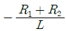
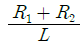
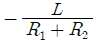
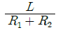
(정답률: 66%)
62. 회로에서 저항 15Ω에 흐르는 전류는 몇 A 인가?
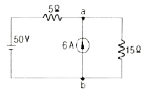
- 0.5
- 2
- 4
- 6
(정답률: 49%)
63. 선형회로와 가장 관계가 있는 것은?
- 중첩의 원리
- 테브낭의 정리
- 키르히호프의 법칙
- 페러데이의 전자유도법칙
(정답률: 53%)
64. 다음 중 그림에서 단자 a, b 에 나타나는 전압 Vab는 약몇 V 인가?
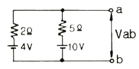
- 3.4
- 4.3
- 5.7
- 6.5
(정답률: 52%)
65. T 형 4단자 회로망에서 영상 임피던스가 Z01 = 50Ω, Z02 = 2Ω 이고, 전달 정수가 0 일 때 이 회로의 4단자 정수 D 의 값은 얼마인가?
- 10
- 5
- 0.2
- 0
(정답률: 39%)
66. 정전용량의 [F]와 같은 단위는 무엇인가? (단, C는 쿨롱, N은 뉴턴, F는 패럿, V는 볼트, m는 미터이다.)
- V/C
- N/C
- C/m
- C/V
(정답률: 57%)
67. 대칭 3상 Y결선에서 선간전압이
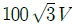
이고 각 상의 임피던스 Z = 30 + j40Ω 의 평형 부하일 때 선전류는 몇A 인가?- 2
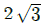
- 5
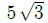
(정답률: 55%)
68. 구형파의 파고율은 얼마인가?
- 1.0
- 1.414
- 1.732
- 2.0
(정답률: 68%)
69. 다음 중 1차 지연요소의 전달함수는?
- K
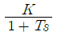
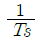
- Ts
(정답률: 68%)
70. 주기적인 구형파의 신호는 그 주파수 성분이 어떻게 되는가?
- 무수히 많은 주파수의 성분을 가진다.
- 주파수 성분을 갖지 않는다.
- 직류분 만으로 구성된다.
- 교류합성을 갖지 않는다.
(정답률: 71%)
71. 4단자 정수 A, B, C, D에서 어드미턴스의 차원을 가진 정수는?
- A
- B
- C
- D
(정답률: 70%)
72. R-L-C 직렬 회로에서 진동 조건은 어느 것인가?
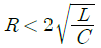
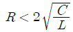
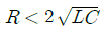
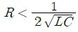
(정답률: 62%)
73. t sin ωt 의 라플라스 변환은?
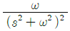
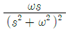
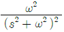
(정답률: 43%)
74. 전류 i = 30 sinωt + 40 sin(3ωt+60°)[A]의 실효값은 몇 A 인가?(오류 신고가 접수된 문제입니다. 반드시 정답과 해설을 확인하시기 바랍니다.)
(정답률: 54%)
75. 전류 [A]가 1H 의 인덕터에 흐르고 있을 때 인덕터가 축적되는 에너지는 몇J 인가?
- 75
- 100
- 150
- 200
(정답률: 57%)
76. R-L 직렬회로에서 시정수의 값이 클수록 과도현상의 소멸되는 시간에 대한 설명으로 옳은 것은?
- 짧아진다.
- 과도기가 없어진다.
- 길어진다.
- 변화가 없다.
(정답률: 62%)
77. 9Ω과 3Ω의 저항 각 3개를 그림과 같이 연결하였을 때 A, B 사이의 합성저항은 몇 Ω 인가?
- 2
- 3
- 4
- 6
(정답률: 61%)
78. 두 개의 코일 a, b가 있다. 두 개를 직렬로 접속 하였더니 합성 인덕턴스가 119mH 이었고, 극성을 반대로 접속하였더니, 합성 인덕턴슨가 11mH 이었다. 코일 a 의 자기인덕턴스가 20mH 라면 결합계수 K는 얼마인가?
- 0.6
- 0.7
- 0.8
- 0.9
(정답률: 51%)
79. 의 역 Laplace 변환은?
- e-t - e-3t
- et - e3t
- e-t - e3t
- et - e-3t
(정답률: 69%)
80. Va = 3V, Vb = 2-j3V, Vc = 4+j3V를 3상 불평형 전압 이라고 할 때 영상전압은 몇 V 인가?
- 0
- 3
- 9
- 27
(정답률: 56%)
5과목: 전기설비기술기준 및 판단 기준
81. 전압의 구분에 대한 설명으로 옳지 않은 것은?(관련 규정 개정전 문제로 여기서는 기존 정답인 2번을 누르면 정답 처리됩니다. 자세한 내용은 해설을 참고하세요.)
- 전압은 저압, 고압, 특별고압의 3종으로 구분한다.
- 저압은 직류는 600V 이하, 교류는 750V 이하이다.
- 고압은 저압을 넘고 7000V 이하이다.
- 특별고압은 7000V를 넘는 것이다.
(정답률: 66%)
82. 통신상의 유도장애를 방지하기 위하여 가공 직류 절연귀선이 기설 가공약전류 전선로와 병행하여 시설될 때 특별한 경우를 제외하고 이격거리는 몇 m 이상으로 하여야 하는가?(오류 신고가 접수된 문제입니다. 반드시 정답과 해설을 확인하시기 바랍니다.)
- 3.5
- 4
- 4.5
- 5
(정답률: 31%)
83. 다음 중 사용전압이 440V 인 이동 기중기용 접촉전선을 애자사용 공사에 의하여 옥내의 전개된 장소에 시설하는 경우 사용하는 전선으로 옳은 것은?
- 인장강도가 3.44kN 이상인 것 또는 지름 2.6mm 의 경동선으로 단면적이 8mm2 이상인 것
- 인장강도가 3.44kN 이상인 것 또는 지름 3.2mm 의 경동선으로 단면적이 18mm2 이상인 것
- 인장강도가 11.2kN 이상인 것 또는 지름 6mm 의 경동선으로 단면적이 28mm2 이상인 것
- 인장강도가 11.2kN 이상인 것 또는 지름 8mm 의 경동선으로 단면적이 18mm2 이상인 것
(정답률: 50%)
84. 플러어덕트공사에 의한 저압 옥내배선에서 연선을 사용하지 않아도 되는 전선(동선)의 지름은 최대 몇 mm인가?(관련 규정 개정전 문제로 여기서는 기존 정답인 4번을 누르면 정답 처리됩니다. 자세한 내용은 해설을 참고하세요.)
- 1.6
- 2.0
- 2.6
- 3.2
(정답률: 49%)
85. 일반적인 접지공사의 방법으로 옳지 않은 것은?(관련 규정 개정전 문제로 여기서는 기존 정답인 2번을 누르면 정답 처리됩니다. 자세한 내용은 해설을 참고하세요.)
- 고압용 기계기구의 외함은 제1종 접지공사
- 특별고압 계기용 변성기의 2차측 전로에는 제2종접지공사
- 고압에서 저압으로 변성하는 변압기의 저압측 중성점에는 제2종 접지공사
- 특별고압 전로와 비접지식 저압전로를 결합하는 변압기의 혼촉 방지판에는 제2종 접지공사
(정답률: 37%)
86. 도로를 횡단하여 시설하는 지선의 높이는 특별한 경우를 제외하고 지표상 몇 m 이상으로 하여야 하는가?
- 5
- 5.5
- 6
- 6.5
(정답률: 48%)
87. 지중 전선로의 시설 방식이 아닌 것은?
- 직접매설시
- 관로식
- 압착식
- 암거식
(정답률: 66%)
88. 지중 전선로에 있어서 폭발성 가스가 침입할 우려가 있는 장소에 시설하는 지중함은 크기가 몇 m3 이상일 때 가스를 방산시키기 위한 장치를 시설하여야 하는가?
- 0.25
- 0.5
- 0.75
- 1.0
(정답률: 62%)
89. 다음 중 옥내에 시설하는 고압 이동전선으로 사용되는 것은?
- 고압용 1종 클로로프렌 캡타이어 케이블
- 고압용 2종 클로로프렌 캡타이어 케이블
- 고압용 3종 클로로프렌 캡타이어 케이블
- 고압용 4종 클로로프렌 캡타이어 케이블
(정답률: 39%)
90. 단면적 55mm2 인 경동연선을 사용하는 특별고압 가공 전선로의 지지물로 내장형의 B종 철큰콘크리트주를 사용하는 경우, 허용 최대경간은 몇 m 인가?
- 150
- 250
- 300
- 500
(정답률: 28%)
91. 다음 중 발전기를 전로로부터 자동적으로 차단하는 장치를 시설하여야 하는 경우에 해당하지 않는 것은?
- 발전기에 과전류가 생긴 경우
- 용량이 500kVA 이상의 발전기를 구동하는 수차의 압유 장치의 유압이 현저히 저하한 경우
- 용량이 100kVA 이상의 발전기를 구동하는 풍차의 압유 장치의 유압, 압축공기장치의 공기압이 현저히 저하한 경우
- 용량이 5000kVA 이상인 발전기의 내부에 고장이 생긴 경우
(정답률: 48%)
92. 6kV 고압 옥내배선을 애자사용공사로 하는 경우 전선의 지지점간의 거리는 전선을 조영재의 면을 따라 붙이는 경우 몇 m 이하이어야 하는가?
- 1
- 2
- 3
- 5
(정답률: 53%)
93. 다음 중 특별고압 전선로용으로 사용할 수 있는 케이블은?
- 비닐외장 케이블
- MI 케이블
- CD 케이블
- 파이프형 압력 케이블
(정답률: 37%)
94. 다음 중 저∙고압 가공 전선과 가공 약전류전선 등을 동일 지지물에 시설하는 경우 옳지 않은 것은?
- 가공 전선을 가공 약전류전선 등의 위로하고 별개의 완금류에 시설할 것
- 전선로의 지지물로 사용하는 목주의 풍압하중에 대한 안전율은 1.5 이상일 것
- 가공 전선과 가공 약전류전선 등 사이의 이격거리는 저압과 고압 모두 75cm 이상일 것
- 가공 전선이 가공 약전류전선에 대하여 유도작용에 의한 통신상의 장해를 줄 우려가 있는 경우에는 가공 전선을 적당한 거리에서 연가할 것
(정답률: 58%)
95. 다음 중 고압 옥내배선을 할 수 있는 공사 방법은?
- 합성수지관공사
- 금속관공사
- 금속몰드공사
- 케이블공사
(정답률: 63%)
96. 220V 용 전동기의 절연내력 시험시 시험전압은 몇 V 로 하여야 하는가?
- 300
- 330
- 450
- 500
(정답률: 49%)
97. 제2종 접지공사의 접지저항값을 [Ω]으로 정하고 있는데, 이 때 I에 해당하는 것은?
- 변압기의 고압측 또는 특별고압측 전로의 1선지락 전류의 암페어 수
- 변압기의 고압측 또는 특별고압측 전로의 단락사고 시의 고장전류의 암페어 수
- 변압기의 1차측과 2차측의 혼촉에 의한 단락전류의 암페어 수
- 변압기의 1차와 2차에 해당되는 전류의 합
(정답률: 45%)
98. “조상설비”에 대한 용어의 정의로 옳은 것은?
- 전압을 조정하는 설비를 말한다.
- 전류를 조정하는 설비를 말한다.
- 유효전력을 조정하는 전기기계기구를 말한다.
- 무효전력을 조정하는 전기기계기구를 말한다.
(정답률: 62%)
99. 전력보안 통신용 전화설비를 시설하여야 하는 곳은?
- 원격감시제어가 되는 변전소와 이를 운용하는 급전소간
- 동일 수계에 속하고 보안상 긴급연락의 필요가 없는 수력발전소 상호간
- 원격감시제어가 되는 발전소와 이를 운용하는 급전소간
- 2 이상의 급전소 상호간과 이들을 총합운용하는 급전소간
(정답률: 65%)
100. 교류 전차선과 식물사이의 이격 거리는 몇 m 이상이어야 하는가?
- 1
- 1.5
- 2
- 2.5
(정답률: 56%)